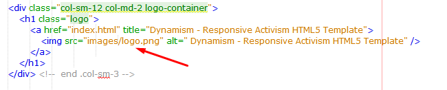

Created: 10/08/2016
Last Edited: 15/09/2016
By: CodeEcstasy
Email: jamal08sust@gmail.com
Web Site: codeecstasy.com
Thank you for purchasing Dynamism - Responsive Activism HTML5 Template.
If you like this scripts, feel free to rate it five stars at CodeCanyon downloads section.
If you encounter any problems please do not give a low rating but contact me first. So I can help you.
Thank You!
Dynamism is a modern looking HTML5 template designed & developed for Activism Websites in mind and it also suites for other non profit sites. It works smoothly on your Computer, or on your tablet and mobile devices. It’s comes with eye catching features, such as animates boxes, letter section, petition form, share boxes and much more.
<div class="container">
<div class="row clearfix">
<div class="col-md-6 col-sm-12">
<span class="top-phone-no">
<i class="fa fa-phone-square"></i>
+093-120-525-9162
</span>
<span class="top-email-info">
<i class="fa fa-envelope"></i>
query@yourdomain.com
</span>
</div> <!-- end col-sm-6 -->
<div class="col-md-6 col-sm-12 text-right">
<span class="top-location-info">
<i class="fa fa-map-marker"></i>
3100 C/A Mouchak, Sylhet, Bangladesh
</span>
</div> <!-- end col-sm-6 -->
</div> <!-- end .row -->
</div> <!-- end .container -->
<link rel="stylesheet" href="css/bootstrap.min.css" /> <link href="css/bootstrap-social.css" rel="stylesheet" type="text/css" > <link href="css/icon-styles.css" rel="stylesheet" type="text/css" > <link href="css/font-awesome.min.css" rel="stylesheet" type="text/css" > <link href="css/animate.css" rel="stylesheet" type="text/css" > <link href="css/superfish.css" rel="stylesheet" type="text/css" > <link href="css/superfish-navbar.css" rel="stylesheet" type="text/css" > <link href="css/superfish-vertical.css" rel="stylesheet" type="text/css" > <link href="css/owl.carousel.css" rel="stylesheet" type="text/css" > <link rel="stylesheet" href="css/styles.css" />
<script src="js/jquery.min.js"></script> <script src="js/bootstrap.min.js"></script> <script src="js/superfish.js"></script> <script src="js/hoverIntent.js"></script> <script src="js/wow.min.js"></script> <script src="js/jquery.backTop.min.js "></script> <script src="js/jquery.mobilemenu.js"></script> <script src="js/waypoints.min.js"></script> <script src="js/waypoints-sticky.min.js"></script> <script src="js/owl.carousel.min.js"></script> <script src="js/jquery.stellar.min.js"></script> <script src="js/jquery.counterup.min.js"></script> <script src="https://maps.google.com/maps/api/js?sensor=true"></script> <script src="js/jquery.gmap.min.js"></script> <script src="js/custom-scripts.js"></script>
<div class="main-menu-container">
<nav class="clearfix" id="main-menu">
<ul class="sf-menu main-menu">
<li>
<a href="#about_link" class="nav_menu">About</a>
</li>
<li>
<a href="#letter_link" class="nav_menu">Letter</a>
</li>
<li>
<a href="#sign_it_link" class="nav_menu">Sign it</a>
</li>
<li>
<a href="#update_link" class="nav_menu">Latest</a>
</li>
<li>
<a href="#share_link" class="nav_menu">Share</a>
</li>
<li>
<a href="#" class="btn btn-lg top-donate-btn">Donate & Help</a>
</li>
</ul>
</nav> <!-- end .main-menu -->
</div>
It's very easy to change your image. Just take a look at the screenshot below. Change the image link to your own image.

- jQuery (http://jquery.com/)
- jQuery CounterUp (https://github.com/bfintal/Counter-Up)
- WayPoints (http://imakewebthings.com/jquery-waypoints/)
- OWL Carousel (http://owlgraphic.com/owlcarousel/)
2016, July, 02 - v 1.0.0
- Initial release
Once again, thank you so much for purchasing Dynamism - Responsive Activism HTML5 Template.
CodeEcstasy